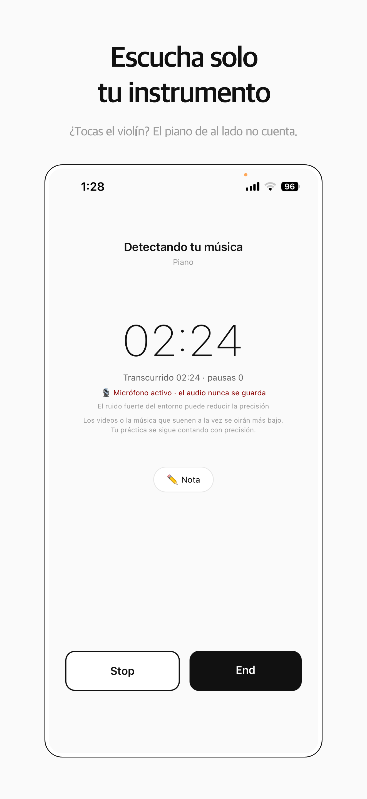
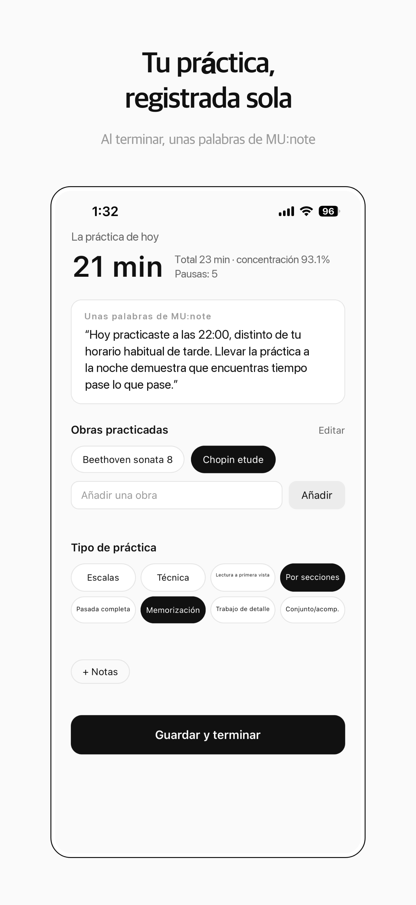
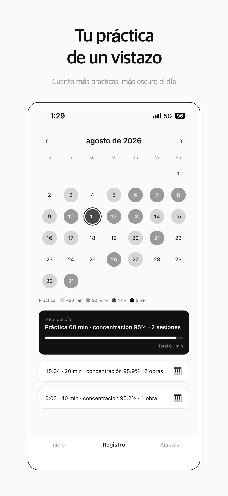
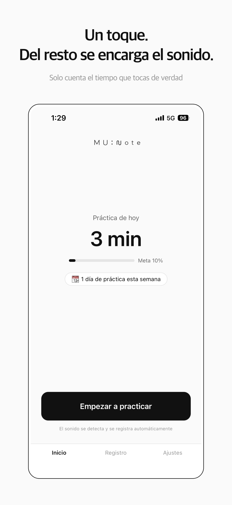
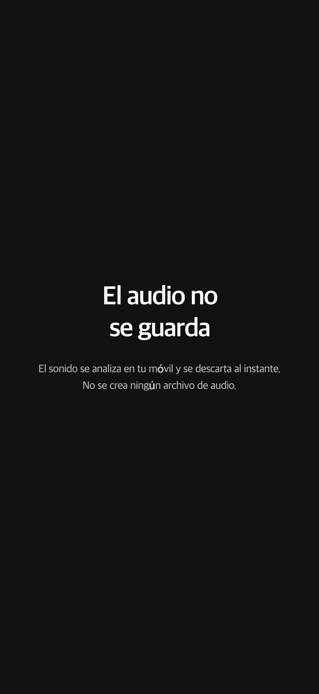

Cuenta solo
tu instrumento
Empieza a practicar: solo suma el tiempo que tocas de verdad.
App para iOS · funciona sin cuenta
Empieza a practicar: solo suma el tiempo que tocas de verdad.
App para iOS · funciona sin cuenta
MU:note escucha y guarda solo el tiempo que tocaste de verdad.
Pulsa empezar y practica: del resto se encarga la app.
Hecho para quienes estudian música o preparan la prueba de acceso y van cada día al aula de estudio.
Deja el móvil cerca y ponte a practicar. Olvídate del cronómetro.
El tiempo suma solo mientras suena el instrumento que elegiste. Otros instrumentos y el ruido no cuentan.
Tu tiempo real y tu concentración se acumulan en el calendario. Cuando una sesión supera los 20 minutos, llega una breve nota de análisis.





Desliza para ver más
MU:note reconoce el instrumento que elijas y nada más. La pausa breve para pasar una página sigue formando parte del flujo. Cuando el silencio dura 15 segundos o más, ese tiempo se descuenta. Compatible con piano, cuerdas, vientos y canto.
El sonido se analiza en tu móvil y se descarta al instante. No se crea ningún archivo de audio y nada se envía a ninguna parte. MU:note no escucha qué tocas, solo si estás tocando.
Al terminar la sesión eliges las obras y el tipo de práctica, y puedes añadir una nota breve. El calendario muestra cada día practicado, con el total diario y la concentración.
Cuando una sesión supera los 20 minutos, llega una nota de dos frases basada en tu historial. Usa solo cifras: tiempo de práctica y concentración. Tus notas y los nombres de tus obras nunca se envían.
El registro y el calendario funcionan sin registrarte. Si inicias sesión, tu historial queda guardado: cambia de móvil o reinstala la app, y vuelve.
Un aviso al día, a la hora que tú elijas. Nunca te reprocha un día de descanso. Viene desactivado.
Piano, cuerdas, vientos y canto. Cada instrumento suena distinto, así que la detección se ajusta al que elijas en los ajustes.
No. El sonido se analiza en tu móvil y se descarta al instante. No se crea ningún archivo de audio y nada se envía a ninguna parte.
No. El registro y el calendario funcionan sin registrarte. Si inicias sesión, tu historial queda guardado: cambia de móvil o reinstala la app, y vuelve.
Sí, por ahora todo es gratis.
No. Pasar páginas, beber agua, descansar un momento: nada de eso se cuenta. Cuando el silencio dura 15 segundos o más, ese tiempo se descuenta.
Está en camino. Los micrófonos de Android cambian según el dispositivo, así que estamos reajustando cómo MU:note distingue tu instrumento. Apúntate al aviso de lanzamiento y te avisamos.
El tiempo que cuenta MU:note es el tiempo que practicamos juntos.
La práctica que haces sin la app también es práctica.
Disponible en Español, English, 한국어 y Deutsch